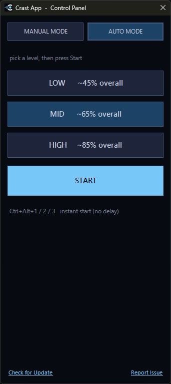
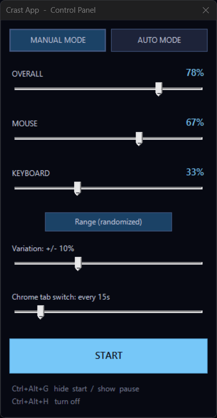

How It Works
Everything you need to know about how Crast works.
Pick a level, then press Start
Auto Mode runs on three ready-made intensity levels, each tuned to hold a steady target on its own.
- Press Ctrl+Alt+H to open the control panel, or right-click the tray icon.
- Switch to the Auto Mode tab.
- Pick Low (~45%), Mid (~65%), or High (~85%) overall activity.
- Press Start. The panel hides and Crast starts running right away, no delay.
In a hurry? Ctrl+Alt+1 / Ctrl+Alt+2 / Ctrl+Alt+3 jump straight to Low / Mid / High from anywhere, instantly, no need to open the panel at all.


Dial in your own numbers
Manual Mode hands you the exact controls behind the presets, for when you want a specific number instead of a preset.
- Switch to the Manual Mode tab in the control panel.
- Drag Overall, or set Mouse and Keyboard individually; Overall updates to match either way.
- Toggle Constant (fixed) or Range (randomized), and set how much it can drift with Variation.
- Set how often Chrome tabs switch, or drag it to 0 to turn that off entirely.
- Press Start, or hide the panel with Ctrl+Alt+G. Either way, there's a short pause before anything actually starts moving, so you have time to step away.
Ctrl+Alt+G hides the panel and starts running, or brings it back to pause and adjust. Ctrl+Alt+H turns Manual Mode off completely.
What about screenshots?
If your tracker takes periodic screenshots, tab switching and scrolling matter more than raw mouse or keyboard input, since a screenshot only shows whatever's on screen at that instant.
- Make sure Chrome is the window actually showing on your screen. Tab switching only helps if Chrome is what's in the foreground.
- Open a few real tabs you actually use for work, docs, dashboards, whatever's legitimate, so what shows up is stuff you'd normally have open anyway.
- Crast rotates through those open tabs automatically, so a screenshot never catches the same tab sitting there twice in a row.
- In Manual Mode, the Chrome tab switch slider sets exactly how many seconds go by between switches.
- Crast scrolls the page too. Between a fresh tab and a different scroll position, back-to-back screenshots look like normal, active browsing instead of one frozen window.
Using Manual Mode? The control panel itself is a real, visible window while it's open, so if a screenshot would catch anything, it's that. Adjust your sliders and hit Start (or Ctrl+Alt+G) as soon as you're done. The panel disappears the instant you do, and the 10-second pause before anything starts moving means even a screenshot fired right around then won't catch the panel on screen.
What about activity or app-usage logs?
Screenshots aren't the only thing some trackers capture. A few also log which applications are open or in focus.
- If Crast ever shows up in a log like that, it appears under a generic name, "Desktop Utility", rather than "Crast."
- That's simply a neutral, unbranded label. It's not meant to impersonate any other real software or company; it's just there so a background utility isn't announcing itself with a name it doesn't need to.
- You're still responsible for using Crast within whatever agreements or policies apply to your work, same as everywhere else on this site. See the FAQ for more on the legal and ethical side.
Good to know
The quick facts on getting set up, licensing, and support.
Windows 10 or 11
Everything Crast needs is already built into Windows, so there's nothing extra to install. No admin rights needed.
One key, your devices
Crast uses a license key that works on the number of devices in your tier: Single, Dual, or Triple. See the Download page for details.
Updates & support
Use the in-app "Check for Update" button to grab the latest version, or "Report Issue" (or email support) if something's not working right.
Want the bigger picture?
Head to the FAQ for why Crast exists, and the legal and ethical side of using it.
Read the FAQ